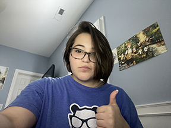
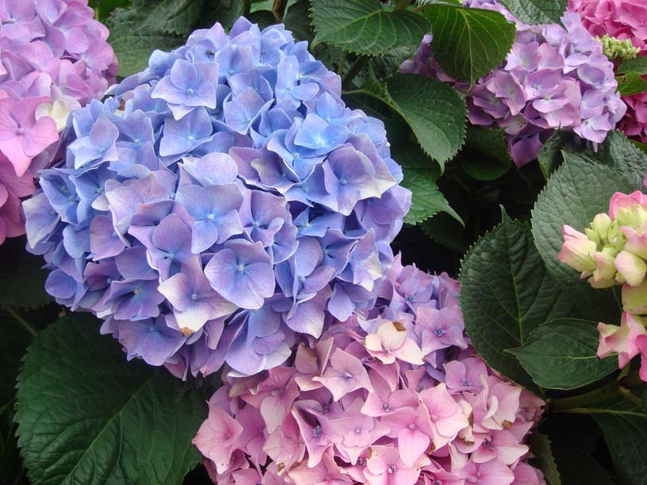
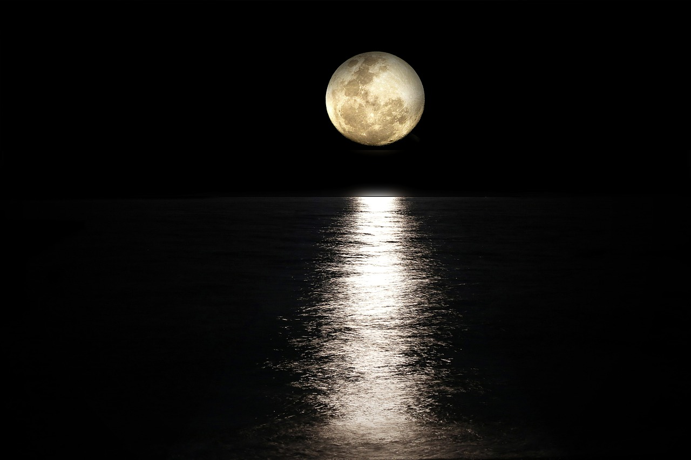
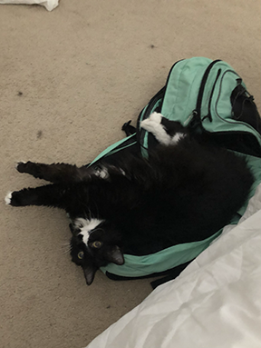
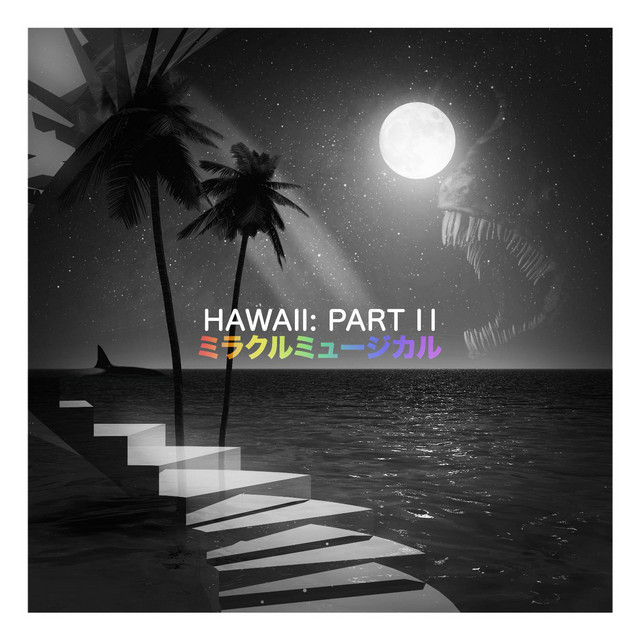

Hello, world! My name is Cassandra.
This is a webpage all about nme. My likes, dislikes, hopes, dreams, and favorite things.

Biography
I am a student in Highschool taking both AOIT paths. I have two siblings. Both of my siblings are boys. My older brother is in College and my younger brother is in Middle School. I also have 3 pets (2 cats and 1 dog). My cats names are Simba and Barbossa. My dogs name is Walle.
In my spare time I like to crochet, play games, and watch TV.
My Favorite Quotation
"Whether a fish lives in a clear stream or a water ditch, so long as it continues swimming, it will grow up beautifully."-Koro Sensei
My Favorite Foods
- Pizza
- Pasta
- Chicken
- Tacos
- Seafood
My top Eight Favorite Webtoons, in order
- Omniscient Reader
- Bastard
- Purple Hyacinth
- Solo Leveling
- Unholy Blood
- Sweet Home
- Siren's Lament
- My Dear Cold-Blooded King
Countries I'd Like to Visit, and What I'd Like To Do there
- Japan
- Great Temples
- Cherry Blossoms
- Eat Food
- Greece
- Pompeii
- Olive Grove
- Eat Food
- India
- Eat Food
- Diwali
- Markets
| Favorite Flower | Hydrangea |  |
|---|---|---|
| Favorite Time of Day | Night |  |
| Favorite Drink | Water |  |
| Favorite Animal | Cats |  |
| Favorite Song | "Dream Sweet in Sea Majory" by Miracle Musical |  |
| Favorite Color | Ocean Blue |  |
Contact Information
Email: randomemail@gmail.com
Phone: 666-666-6661